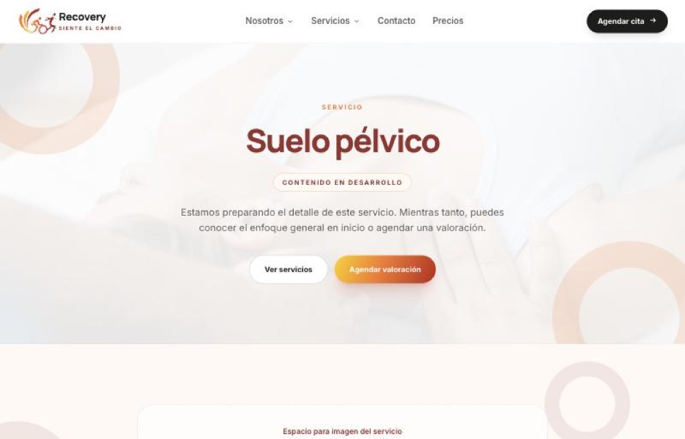
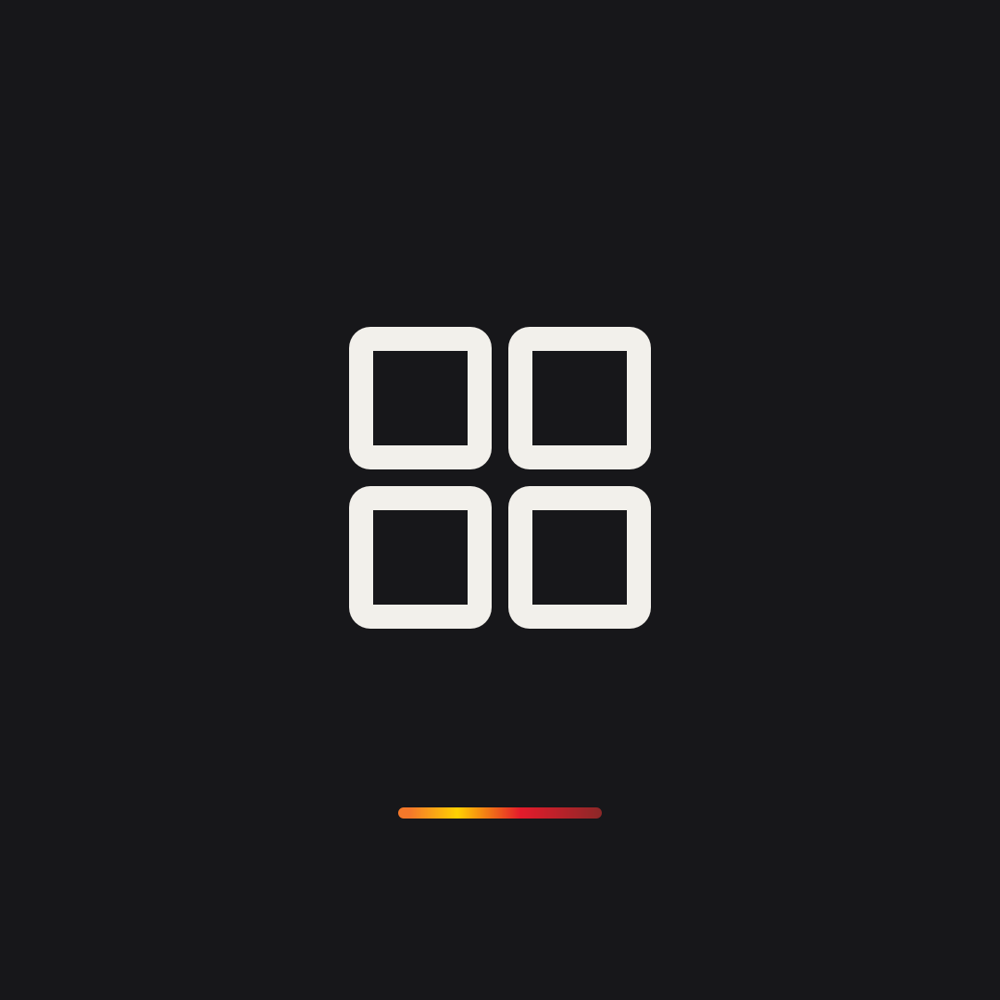

Qué pasó en11 mesesy qué hacemosde diciembre a febrero
Las 47 piezas publicadas entre el 1 de enero y el 24 de noviembre, con datos reales de Metricool. Y el plan de contenidos, pauta, automatización e identidad para el trimestre que arranca en diciembre.
Vistas del año407.719326 días · 1.250 por día
Seguidores netos+473863 ganados · 390 perdidos
Piezas publicadas47una cada 7 días · 28 reels, 15 carruseles, 4 fotos
Inversión en pauta$0el año fue 100 % orgánico
Días sin publicar99seguidos, del 11 may al 18 ago
Lo esencial en un minuto
Si no lee nada más, lea esto. Todo lo demás está desplegable más abajo, sección por sección.
Mejor mes
Febrero
81.549
2.912 vistas por día. El mes del 10/10 Recovery Sport Fest, el evento de los 10 años. El 1 de febrero solo, la cuenta hizo 37.968 vistas.
Enero y febrero juntos son el 37 % de todo el año. No fue gestión mensual: fue un plan de cobertura de evento con fases de expectativa, durante y después.
Por qué · un evento propio, grande y presencial
Peor mes
Noviembre
5.162
234 vistas por día y el único mes del año con seguidores en negativo (−4).
Causa directa: 2 piezas en 23 días. No fue producción: noviembre quedó sin servicio mientras se definía la continuidad, igual que junio y julio.
Por qué · se dejó de publicar
Mejor formato
Evento documentado
68 %
Del alcance de todo el año lo produjo el contenido de evento, con el 51 % de las piezas. Alcance mediano de 1.140 contra 689 del resto.
Probado dos veces: el Sport Fest en febrero y el taller de pretemporada en octubre.
Por qué · se muestra, no se promete
El problema de fondo
Sin ritmo y sin pauta
1,6
Publicaciones por semana según el plan contratado. Y $0 invertidos en pauta en todo el año.
Con ese ritmo y sin inversión, crecer depende de que vuelva a pasar algo extraordinario.
Solución · frecuencia, pauta y una sola palabra
En una frase
En 11 meses Recovery publicó 47 piezas y sumó +473 seguidores. Pero 351 de esos 473 llegaron en el primer semestre, empujados por el aniversario y por el título mundial de una atleta de la casa. El segundo semestre, sin un evento de esa escala, sumó 122. La cuenta no tiene un motor propio de crecimiento: tiene picos prestados. Construir ese motor es lo que proponemos para diciembre, y necesita las tres cosas a la vez: más frecuencia, una inversión en pauta y un embudo sin fricción.
Índice · toca una sección para abrirla
01
El año, mes a mes
Dónde estuvieron los picos, dónde los silencios y qué los causó.
Antes de leer el gráfico: fueron dos servicios distintos
Enero y febrero no fueron gestión mensual de contenido. Recovery contrató un plan puntual de cobertura del evento de los 10 años, con su estructura de tres fases: expectativa, durante y después. Por eso esos dos meses tienen 24 piezas —la mitad del año— concentradas en pocas semanas.
La gestión mensual de contenido corre de marzo a noviembre. Son dos modelos de trabajo diferentes y conviene no mezclarlos al sacar conclusiones.
Vistas por día y piezas publicadas
Enero – noviembre 2026 · la barra es el promedio diario del mes
Dos cosas que saltan a la vista. El año tiene una pendiente descendente clara desde febrero, y los tres picos coinciden con hechos concretos, no con la cadencia de publicación.
Los dos modelos, comparados
75.859Vistas al mes · plan de eventoEne–feb · 12 piezas/mes · +90,5 seguidores/mes
28.444Vistas al mes · gestión mensualMar–nov · 2,6 piezas/mes · +32,4 seguidores/mes
2,7×La diferenciaEl plan de evento rindió 2,7 veces más vistas y 2,8 veces más seguidores por mes
No es que el equipo trabajara mejor en enero: es que un plan de campaña con estructura —expectativa, durante, después— rinde mucho más que publicar piezas sueltas. Es exactamente el argumento del plan de diciembre: el taller del 12 no es una pieza más, es un arco de cuatro piezas con sus fases, igual que el Sport Fest.
Un dato más, para dimensionar el ritmo real: bajo gestión mensual se publicaron 2,6 piezas al mes, cuando el plan contratado son 7. La diferencia se explica casi toda por los meses que quedaron sin definición de continuidad.
Explora las publicaciones de cada mes
Toca un mes —o una barra del gráfico— para ver qué se publicó. Cada pieza abre la publicación real en Instagram.
Pico 1 · Enero–febrero
10/10 Recovery Sport Fest. El evento de los 10 años, el 1 de febrero, con un plan de cobertura contratado aparte.
El 1 de febrero: 37.968 vistas en un día.
El 28 de enero: +64 seguidores en un día, el récord del año.
Los dos meses suman 151.718 vistas y +181 seguidores.
Pico 2 · Abril
Paula Torres, campeona mundial de marcha. Una atleta de la casa.
Con una sola publicación en todo el mes, abril hizo 59.681 vistas y +90 seguidores.
Prensa ganada, no producida. No se puede planificar, pero sí se puede estar preparado para capitalizarla.
Pico 3 · Julio y octubre
Julio hizo +106 seguidores sin publicar nada en el feed. Octubre, el taller.
El repunte de julio hay que verificarlo: no corresponde a publicaciones. Probablemente historias, menciones o cobertura deportiva.
Octubre fue el mejor mes del segundo semestre, con 7 piezas y el taller.
Junio y julio no se publicó por una razón concreta, no por falta de ideas: ver abajo.
El silencio más caro del año, y por qué ocurrió
99 días seguidos sin publicar en el feed, del 11 de mayo al 18 de agosto. Mayo cerró en 1.056 vistas diarias y junio cayó a 510, el piso del año. Hubo además otros dos silencios de más de tres semanas en marzo y abril.
La causa no fue de producción. Hubo un desfase de comunicación con el equipo de Recovery y no estaba definido si querían o necesitaban continuar con el servicio publicitario. Mientras esa decisión quedó en el aire, el calendario se detuvo.
Y está volviendo a pasar. Noviembre lleva 2 piezas y hoy son 12 días sin publicar, por el mismo motivo. Es el riesgo más concreto del cierre de año y es el único de todo este informe que no se resuelve con contenido, pauta ni diseño: se resuelve definiendo la continuidad del servicio. Está como primera decisión en la sección final.
02
El embudo: dónde se tapa
Los 5 filtros, en orden. Alcance, retención y valor pasan. Conversión e intención están tapados.
FILTRO 1
Alcance · ¿te vieron?
Mediana de 825 personas alcanzadas por pieza sobre 3.691 seguidores. El contenido circula, pero apenas sale de la propia casa: alcanza al 22 % de quienes ya siguen la cuenta.
Bien
FILTRO 2
Retención · ¿se quedaron?
Mediana de 18,7 % y 8,9 segundos vistos. Razonable para la categoría, con una excepción clara: todo lo que pasa de 60 segundos se desploma.
Razonable
FILTRO 3
Valor · ¿les sirvió?
13,2 guardados y compartidos por cada 1.000 vistas. Es el punto más fuerte de la cuenta: la gente reenvía el contenido de Recovery a alguien que lo necesita.
Bien
FILTRO 4
Conversión · ¿se quedaron contigo?
863 seguidores ganados y 390 perdidos en el año. De los +473 netos, 351 ocurrieron en el primer semestre gracias al Sport Fest. Sin evento, la cuenta no crece sola.
Mal
FILTRO 5
Intención · ¿te buscaron?
2,3 comentarios por cada 1.000 vistas, y comentar es la única puerta para recibir las guías. El reel que estrenaba la guía del tendón recibió 0.
Mal
Las tres causas, en orden
Los filtros 1, 2 y 3 funcionan: lo que se publica se ve y se comparte. Lo que no ocurre es la conversión. Hay tres razones y las tres son corregibles.
La frecuencia es demasiado baja para sostener la atención. El plan contratado son 7 piezas al mes —4 videos y 3 carruseles—, es decir 1,6 publicaciones por semana. En la práctica, bajo gestión mensual —de marzo a noviembre— se publicaron 2,6 al mes. Y conviene decirlo con todas las letras: esas 7 piezas son exactamente lo que cubre el plan contratado de $450. Subir la frecuencia no es un problema de ejecución, es una decisión de presupuesto (sección 09). Una cuenta local necesita aparecer varias veces por semana para que la audiencia no se enfríe entre un contenido y el siguiente. Los meses con más piezas tienen más vistas (correlación de 0,57), y el peor mes del año es el de menos piezas.
No hubo un solo dólar de pauta. Todo 2026 fue orgánico. Con 7 piezas al mes y sin inversión, la adquisición de audiencia nueva depende enteramente de que ocurra un hecho extraordinario. Y eso es exactamente lo que pasó: los tres picos del año fueron el Sport Fest, el título mundial de Paula Torres y el taller de pretemporada. Ninguno es repetible a voluntad.
La única puerta de entrada es comentar en público. 2,3 comentarios por cada 1.000 vistas. En salud, pedirle a alguien que escriba públicamente que le duele algo es la acción más cara que existe.
Dicho de otro modo: el contenido no es el problema. El problema es el ritmo, la ausencia de inversión y la fricción del pedido.
03
Qué funcionó mejor
Las 6 mejores piezas del año y por qué. Cinco de las seis pertenecen a un evento.
Vistas por pieza · agosto a noviembre
47 piezas del año · mediana de alcance 825
Las cinco mejores pertenecen al taller o al equipo. Ninguna pieza puramente promocional entra al top 5.
Las piezas, en vivo
Formato ganador
El evento real documentado.
Las 5 piezas del arco promediaron 1.830 vistas contra 1.239 de la mediana.
Probado dos veces: el Sport Fest de febrero y el taller de octubre, los dos mejores momentos del año.
Ángulo que más circula
Detrás de escena y prueba / resultado.
Medianas de 1.692 y 1.539 vistas.
La vacante —puro contenido humano, sin venta— hizo 1.925 vistas, más que cualquier pieza comercial.
Ángulo que mejor vende
Dolor concreto. El único que hace escribir.
Mediana de 5 comentarios, contra 3 de los reels y 0,5 de los carruseles.
Funciona cuando nombra la escena, no el diagnóstico.
Vistas por día, mes a mes
La caída de noviembre es volumen, no alcance
Agosto 4 piezas · Septiembre 4 · Octubre 6 · Noviembre 2 en 23 días.
04
Qué funcionó peor
Cuatro problemas concretos, todos corregibles sin producir más contenido.
1 · Noviembre se apagó
2 piezas en 23 días contra 6 en octubre.
234 vistas diarias contra 705: −67 %.
Primer mes con seguidores netos negativos (−4).
Sin carruseles desde el 22 de octubre.
2 · Los reels largos se caen
El reel del tendón dura 80 segundos y retuvo 11,6 %: la peor retención del año.
Los dos mejores retienen 21,5 % y 22,2 % y duran 26 y 39 segundos.
La frontera está cerca de los 60 segundos.
3 · Vender reduce el alcance
Piezas de venta: mediana de 409 personas. De valor o comunidad: 843. El doble.
Y la mitad del calendario (6 de 16) fue de venta directa.
Incontinencia y Cámara Americana: 315 y 245 personas, 0 comentarios cada uno.
4 · Las historias están muertas
48 historias entre el 4 de octubre y el 21 de noviembre.
Alcance mediano 108 personas: el 2,9 % de los seguidores.
5 respuestas en 48 historias. Es donde nacen los mensajes directos y no produce ninguno.
Retención según duración del reel
10 reels · cada punto es una pieza
Regla para diciembre: ningún reel pasa de 45 segundos. Lo que no cabe, se parte en dos o se convierte en guía.
Las que peor funcionaron
Cinco carruseles y fotos por debajo de las 320 personas alcanzadas, y el reel más largo del año. La última tarjeta aparece archivada: el post de la vacante ya no está disponible en Instagram —se dio de baja al llenar el puesto—, aunque sus métricas siguen en Metricool y fue la tercera mejor pieza de octubre.
Las piezas de agosto a noviembre, con todo el detalle
Fecha
Pieza
Tipo
Vistas
Alcance
Likes
Coment.
Guard.
Comp.
Reten.
05
Quién está del otro lado
Local, adulta y equilibrada entre hombres y mujeres. La mitad no vive en Cuenca.
Edad y género de los seguidores
3.666 seguidores con dato
MujeresHombres
El 68 % tiene entre 25 y 44 años y el reparto por género es casi exacto. El suelo pélvico y el dolor de oficina tienen público.
Cuenca 47,6 %. Con Ricaurte, Turi, Valle, Gualaceo, Llacao, San Joaquín, Sayausí, Sinincay, Tarqui y Paccha, el Azuay ampliado pasa del 52 %.
Guayaquil 7,4 % y Quito 5,0 %: uno de cada ocho seguidores, y no pueden ir a la clínica.
Qué significa
La mitad puede ir a la clínica. Para ellos: taller presencial, valoración, programas.
La otra mitad nunca va a ir y hoy no tiene nada que consumir ni comprar. Ahí está la oportunidad de la sección 09.
El público de 25 a 44 trabaja sentado, entrena por su cuenta y tiene hijos pequeños: cuello y espalda, retorno al deporte y suelo pélvico son los tres territorios con más gente.
06
La fuga: ocho palabras en un año
El hallazgo más caro del informe, y el más fácil de arreglar.
Casi cada pieza enseñó una palabra distinta
DOLOR · PRETEMPORADA · DEPORTE · RUTINA · EJERCICIO · BIENESTAR · CUELLO · TENDÓN. Ocho palabras clave distintas en un año. La audiencia nunca aprende el mecanismo: cada publicación empieza de cero y quien comentó una vez no sabe que puede volver a hacerlo.
El costo concreto: el 11 de noviembre se publicó la guía del tendón —con videos, ritmo y temporizador—. El 12 salió el reel que la entregaba. Ese reel recibió 0 comentarios.
Por qué falla pedir comentarios
Comentar es la acción más cara de Instagram: es pública y queda asociada a un padecimiento.
En salud ese pudor se duplica. Los dos carruseles más sensibles —incontinencia y dolor de oficina— tuvieron 0 comentarios los dos.
Hoy el 99,8 % de la atención no tiene ninguna otra puerta por donde entrar.
Qué hacemos en su lugar
Una sola palabra permanente: GUÍA. Se repite en todas las piezas hasta que la audiencia la aprenda.
Tres puertas: comentario, mensaje directo y enlace en la biografía.
Sticker en historias en cada publicación: es la puerta privada.
Primer comentario fijado con la instrucción, para quien llega tarde al video.
07
A quién le hablamos
Hay un solo cliente objetivo definido, y solo el 23 % del contenido le habla a ella.
Pro Motion hizo un primer ejercicio de design thinking con el equipo de Recovery y de ahí salió un perfil. Es el único que existe hoy. Vale la pena mirarlo contra los datos del año, porque confirma unas cosas y desmiente otras.
Mónica35 a 45 años · Cuenca
Ama de casa con poco tiempo que aplaza su dolor. Tiene dolor de cuello y de espalda, tal vez suelo pélvico, y tiene incontinencia —pero piensa que es normal.
Piensa
Que es cosa de la edad y con el tiempo se le pasa.
Que no tiene tiempo y que puede aguantar un poco más.
Que tratarse es muy caro y muy demorado.
Que con unos videos de TikTok o unos ejercicios caseros se soluciona.
Que lo que dijo el doctor es la última palabra.
Que no hay buenas opciones de tratamiento en Cuenca.
Dice
«Yo estoy bien, son unos dolorcitos.»
«Es por la edad» · «es por el ejercicio de ayer».
«Solo la cirugía es la solución.»
«No tengo quién me cuide a las guaguas.»
«Vi esto en TikTok, ¿ustedes hacen?»
«Me dijeron que esto le pasa a todos.»
Hace
Se automedica y copia lo que vio en YouTube.
Hace lo mismo que la vecina porque tenían el mismo problema.
Se aguanta y aprende a vivir con el dolor.
Modifica sus hábitos según sus limitaciones.
Deja de entrenar, de salir y de hacer actividades con los hijos.
Siente
Vergüenza.
Miedo de no curarse y frustración por lo que ya no puede hacer.
Que está sola con este dolor y que no le entienden.
Que gasta plata y no encuentra solución.
Que en cada consulta le engañan.
Que perdió capacidad de atracción como mujer.
Qué confirman los datos
Las cinco piezas con mejor tasa de comentarios de todo el año son las cinco que atacan una frase de ese mapa. No es casualidad: cuando el contenido nombra lo que ella ya piensa, ella escribe.
Pieza
Frase del mapa que ataca
Com. / 1.000
Taller de cuello y espalda
«Me duele el cuello y siempre vuelve»
14,4
Cuidado con los trucos virales
«Vi esto en TikTok, ¿ustedes hacen?»
12,7
¿Crees que no tienes 40 minutos?
«Piensa que no tiene tiempo»
11,6
Te dijeron que la cirugía era tu única salida
«Solo la cirugía es la solución»
11,2
Estiramientos antes de entrenar
«Hace lo que vio en un video»
9,7
Mediana de la cuenta
—
1,8
Y aquí está el problema
De las 47 piezas del año, muy pocas le hablan directamente a Mónica. El calendario se arma alrededor de lo que Recovery tiene en agenda —la pretemporada, el back to routine, el aniversario, el feriado— y no alrededor de lo que a ella le duele.
23 %Le habla a Mónica11 piezas · 7,2 comentarios por 1.000
62 %Habla de la agenda29 piezas · 1,7 comentarios por 1.000
15 %Otro7 piezas · 1,3 comentarios por 1.000
Lo que menos se publica es exactamente lo que mejor funciona. Las piezas que le hablan a ella hacen escribir a la gente cuatro veces más que las que anuncian una promoción o un evento.
La contradicción del suelo pélvico
Es un tema central del perfil —tiene incontinencia y cree que es normal— y sin embargo es lo que peor rinde de todo el año: el carrusel de incontinencia hizo 316 de alcance y 0 comentarios; el reel de suelo pélvico, 392 y 1 comentario.
El propio mapa explica por qué: siente vergüenza. Es el único tema donde el pudor es tan fuerte que no va a comentar en público, y justamente ahí el CTA le pide un comentario público. El tema más íntimo está usando el mecanismo más expuesto. Suelo pélvico tiene que ir por mensaje directo o por pauta, nunca por comentario.
Lo que el mapa pide y no estamos dando
«No hay buenas opciones en Cuenca» y «no hay las soluciones que vi en otros países»: Recovery tiene ecografía, tecar, ondas de choque, láser y EPI, y casi nunca lo muestra. Es un problema de autoridad, no de oferta.
«No tengo quién me cuide a las guaguas» y «yo les cuido a mis papás»: barrera logística real que no se ha tocado nunca. Conecta directo con las rutinas grabadas y el fisio online del tablero.
«Siento que en cada consulta me engañan»: se resuelve con casos reales y testimonios, no con argumentos.
Falta identificar los demás perfiles
Mónica es el único cliente objetivo definido, y no alcanza. La audiencia real de Instagram está casi partida en mitades: 46,6 % mujeres y 44,5 % hombres. Un perfil femenino de 35 a 45 cubre, como mucho, una cuarta parte de la gente que ya sigue la cuenta.
Los otros cuatro que se ven en los datos y todavía no están escritos:
El deportista amateur que vuelve — es quien hizo funcionar la pretemporada, el taller y todo el arco de octubre.
El ejecutivo de oficina — dolor lumbar y cervical por horas sentado; es el público del Back to Routine y del beneficio de la Cámara Americana.
El postquirúrgico o traumatizado — el que llega derivado y necesita acompañamiento largo.
El deportista de alto rendimiento — el de Paula Torres y el ciclo olímpico. Da autoridad aunque no dé volumen.
Propuesta: repetir el ejercicio de design thinking con el equipo clínico para dos perfiles más antes de que arranque la pauta, porque cada perfil es un público distinto en Meta y una creatividad distinta. Sin eso, la campaña se segmenta a ciegas.
Sobre el tablero de importancia y factibilidad
Todo quedó en la esquina baja
Las 14 ideas están apiladas entre 1 y 2 en los dos ejes. Ninguna llegó al cuadrante de mucha importancia y mucha factibilidad, lo que normalmente significa que el ejercicio se quedó corto en generar ideas de alto impacto —o que se calificó con un criterio muy duro.
Tres de esas ideas ya están resueltas
«Educación inicial demostrativa visual e interactiva» —la idea mejor calificada del tablero— ya existe: es exactamente la guía del tendón, con videos, ritmo y temporizador. Hoy su factibilidad es 5, no 1.
«Recibir talleres con personas con el mismo problema»: ya se hizo y se llenó. Factibilidad probada.
«Rutinas grabadas personalizadas online»: es el mismo formato de guía con un paso más.
Vale la pena volver a calificar el tablero con esto sobre la mesa: lo que parecía difícil ya está construido.
08
Por qué hace falta pauta
El año fue 100 % orgánico. Con 7 piezas al mes, eso no alcanza para adquirir audiencia ni pacientes.
El dato que lo resume
Metricool no tiene ninguna cuenta de anuncios conectada a Recovery. En once meses no se invirtió un dólar en pauta. Todo el alcance de 2026 —407.719 vistas— es orgánico.
Y el crecimiento lo demuestra: de los +473 seguidores del año, 351 llegaron en el primer semestre empujados por el aniversario y el título mundial de Paula Torres. El segundo semestre, sin un hecho de esa escala, sumó 122 en cinco meses. La cuenta no tiene un motor propio: depende de que pase algo extraordinario.
Por qué lo orgánico ya no alcanza
El volumen no da. 7 piezas al mes es 1,6 por semana. El alcance orgánico de una cuenta local se sostiene publicando varias veces por semana, no una y media.
El contenido casi no sale de casa. Alcance mediano de 825 personas sobre 3.691 seguidores: el 22 %. Instagram muestra el contenido sobre todo a quien ya sigue la cuenta.
El público objetivo es muy concreto y muy local. Cuenca y alrededores, 25 a 44 años, con un dolor específico. Eso es exactamente lo que la segmentación paga resuelve bien y lo orgánico resuelve mal.
Ya existe a dónde mandar el tráfico. Las guías están publicadas y el flujo de ManyChat está armado. Hoy tenemos el destino construido y nadie que lo recorra.
La campaña que proponemos arrancar en diciembre
No necesita producir nada nuevo. Recovery ya tiene un banco de creatividades probadas: piezas que no dependen de una fecha ni de cupos —no son «últimos lugares del taller», son «descarga la guía»— y que de forma orgánica rindieron muy por encima de la cuenta.
Pieza ya producida
Palabra
Com./1.000
vs. mediana
Cuidado con los trucos virales
EJERCICIO
12,7
7,1×
¿Crees que no tienes 40 minutos?
—
11,6
6,4×
La cirugía no es tu única salida
DOLOR
11,2
6,2×
Estiramientos estáticos
DEPORTE
9,7
5,4×
Mediana de la cuenta
—
1,8
1×
Son cuatro creatividades ya validadas sin un dólar invertido, atemporales y con destino propio: cada una lleva a una guía. Es el mejor punto de partida posible porque elimina la variable «¿funcionará el contenido?» y deja medir solo lo que importa: cuánto cuesta un contacto.
Conjunto principal · captación de guías. Esas cuatro piezas, objetivo mensajes, destino ManyChat. Público: Cuenca + 25 km, 25 a 55 años.
Retargeting. A quien vio más del 50 % de un reel, visitó el perfil o interactuó en 365 días. El público más barato.
Refuerzo de campaña cuando haya evento o taller, con fecha y cupos.
Cuánto invertir: la regla del 10 %
Para dimensionar la pauta hace falta primero un objetivo comercial: cuánto dinero quiere Recovery generar en citas que vengan de redes, al mes. Con ese número, la referencia de trabajo es destinar al menos el 10 % a pauta.
Si el objetivo mensual en citas desde redes es…
Pauta mínima recomendada
$ 1.000
$ 100
$ 2.000
$ 200
$ 3.000
$ 300
$ 5.000
$ 500
Importante: el fee de gestión no es el presupuesto de pauta
Son dos rubros distintos y conviene dejarlo claro desde ahora.
El servicio de comunicación —los videos, los carruseles, la estrategia, las guías, la identidad— no es un gasto transaccional. Hace posicionamiento, exposición de marca y educación: construye la razón por la que alguien elige Recovery cuando le duele, aunque eso ocurra meses después. Su retorno no se mide en citas de ese mes.
La pauta sí es el rubro directamente transaccional. Es el dinero que va a buscar activamente a alguien que todavía no sigue la cuenta y lo trae a pedir una guía o una valoración. Ese es el 10 % del objetivo comercial, y es adicional al fee de gestión. Si no se separan, se termina midiendo la comunicación con la vara equivocada.
Tres cosas que necesitamos de Recovery para dimensionar esto
1 · El catálogo de servicios (resuelto)
Qué trata Recovery exactamente, por área, con el nombre que usan internamente y el precio o el rango.
Ya lo tienen publicado en su web: 16 servicios en 6 áreas. De ahí salen la destacada de Servicios y la segmentación de la pauta.
Tampoco se puede saber qué servicio conviene empujar: hoy se comunica lo que está en agenda, no lo que más margen o más capacidad libre tiene.
2 · Cómo funciona el agendamiento hoy
Quién agenda, en qué herramienta, y si queda registro de por dónde llegó el paciente.
Necesitamos poder marcar el origen de cada cita nueva. Basta con una pregunta al agendar —«¿cómo nos encontró?»— y un campo donde quede.
Sin eso no existe la métrica que de verdad importa: pacientes nuevos atribuidos a redes, mes a mes. Hoy todo lo que medimos son vistas y comentarios, que son medios, no resultado.
3 · El objetivo comercial
Cuánto dinero quiere Recovery generar al mes en citas que vengan de redes.
De ahí sale el presupuesto de pauta (el 10 %) y de ahí sale saber si el plan que proponemos es suficiente o se queda corto.
No hace falta una cifra exacta ni comprometida: un rango sirve para empezar y se ajusta con los datos del primer mes.
Qué permite medir todo esto junto
Con los tres datos, la revisión mensual deja de ser «cuántas vistas tuvimos» y pasa a ser: cuántos contactos entraron, cuánto costó cada uno, cuántos se convirtieron en pacientes nuevos y cuánto facturaron. Esa es la conversación que hoy no podemos tener, y es la única que permite decidir con criterio si subir o bajar la inversión.
Qué hace falta para arrancar
Cuenta publicitaria de Meta activa y con medio de pago.
Acceso de socio a la página y al Instagram desde el Business Manager.
Conectar esa cuenta a Metricool para medir todo en un solo lugar.
Definir el presupuesto mensual de prueba.
Qué vamos a medir
Costo por contacto que entra al menú de guías. Es la cifra que falta.
Contactos por padecimiento: cuál duele más en Cuenca.
Cuántos de esos contactos piden una valoración.
Alcance de no seguidores, que hoy es la parte invisible.
Lo que la pauta no arregla
No compensa la falta de frecuencia. Pautar una cuenta que publica 1,6 veces por semana es llenar de agua un balde con un hueco: la gente llega, mira el perfil y no encuentra actividad.
No arregla el embudo. Si la única puerta sigue siendo comentar en público, la pauta compra vistas y no contactos.
Por eso las tres decisiones van juntas: frecuencia, embudo y pauta. Cualquiera de las tres sola rinde poco.
09
Qué incluye el plan actual y qué no
Diciembre se mantiene en $450 por la reactivación. Desde enero, $550.
Antes de seguir, hay que ponerlo sobre la mesa
Varias de las conclusiones de este informe —el ritmo de 1,6 publicaciones por semana, las historias muertas, la ausencia de pauta— no son fallas de ejecución: son el techo del plan contratado.
Recovery paga hoy $450 mensuales más IVA. Es un plan mínimo viable, no un plan máximo posible. Conviene que quede claro qué cubre ese valor y qué no, para que la decisión de diciembre se tome con la información completa.
La propuesta para la reactivación
Diciembre vuelve con más organización y más estructura que lo que veníamos haciendo: un plan a tres meses, una campaña de pauta montada sobre creatividades ya validadas, historias semanales y las destacadas construidas desde cero.
Por esa reactivación, en diciembre no cobramos el valor adicional. El mes se factura a los $450 de siempre, con la gestión de pauta en Meta Ads y la producción de historias y destacadas incluidas.
Pero conviene decirlo ahora y no en enero: ese trabajo tiene un valor propio. Gestionar campañas en Meta Ads —armar públicos, creatividades, presupuestos y leer resultados— y producir material semanal de historias y destacadas no depende de la cantidad de piezas del plan: es trabajo distinto, que se suma. Desde enero ese valor se reconoce y el plan pasa a $550 mensuales más IVA.
DiciembrePlan actual · mínimo viable
$450mensuales + IVA · en diciembre incluye pauta e historias sin costo adicional
Incluye
4 videos al mes
3 posts carrusel al mes
Hasta 4 guías interactivas al mes
Estrategia, guion, dirección de arte, diseño y programación de todo lo anterior
No incluye
Inversión publicitaria
Gestión de pauta
Estrategia de historias
Gestión de TikTok
Desde eneroSiguiente escalón
$550mensuales + IVA · son $100 más
Suma a lo anterior
Estrategia de historias con una cantidad adecuada y sostenida
Gestión de una estrategia de pauta mínima: armado de campañas, públicos, creatividades y lectura de resultados
Republicación en TikTok del contenido de Instagram
No incluye
La inversión publicitaria en sí
Contenido propio para TikTok
OpcionalCon TikTok propio
$700mensuales + IVA
Suma a lo anterior
8 videos al mes — dos publicaciones semanales en TikTok
Contenido pensado para TikTok, no reciclado de Instagram
Gestión de TikTok Ads incluida
No incluye
La inversión publicitaria en sí
Lo que el plan actual sí está entregando
Por $450 al mes salen 11 entregables: 7 piezas publicadas y hasta 4 guías interactivas.
Cada guía es, técnicamente, una micropágina web: la del tendón tiene videos, ritmo de cada ejercicio y temporizador. Son cuatro páginas web al mes.
Prácticamente cada video sale acompañado de su propio entregable de valor para la audiencia.
Ese material no caduca: sigue trayendo gente meses después, a diferencia de un post.
Por qué TikTok necesita su propio plan
En TikTok solo se publican videos, no carruseles. De las 7 piezas del plan actual, solo 4 son video.
Repartidas entre las dos plataformas, eso daría un video al mes en TikTok, que no sostiene nada.
Por eso la republicación entra en el plan de $550 —es barato y suma—, pero una estrategia real de TikTok arranca en 8 videos al mes.
Los dos presupuestos, otra vez, porque es lo que más se confunde
Ninguno de los tres planes incluye la inversión publicitaria. El fee es el trabajo: estrategia, producción, diseño, guías, gestión. La pauta es dinero que va a Meta para poner ese trabajo delante de gente que todavía no sigue a Recovery.
Si el objetivo comercial fuera $2.000 mensuales en citas desde redes, el escenario sería: en diciembre $450 de gestión + $200 de pauta = $650, y desde enero $550 + $200 = $750 al mes. De ahí se mide cuánto cuesta cada paciente nuevo. Hoy se paga $450 y $0 de pauta, lo que explica buena parte de lo que se ve en este informe.
10
La página web: el activo dormido
Tienen un buen sitio con 14 páginas de servicio publicadas y vacías.
Lo primero, porque resta todos los días
Recovery tiene 14 páginas de servicio publicadas y sin contenido. Suelo pélvico, incontinencia urinaria, bruxismo, vértigo, fisioterapia deportiva, análisis de carrera, talleres… las catorce dicen «Contenido en desarrollo» y pesan unos 400 caracteres cada una.
Una de ellas incluso muestra al público el texto interno de maquetación: «Espacio para imagen del servicio — Archivo: public/images/servicios/suelo-pelvico.webp».

recovery-therapy.com/servicios/suelo-pelvico/ — así se ve hoy la página a la que llega alguien que busca «suelo pélvico Cuenca» en Google.
Por qué esto duele
Google tiene 14 páginas de contenido delgado indexadas bajo el dominio. Eso penaliza al sitio entero, no solo a esas páginas.
Quien llega desde una búsqueda se va, porque no encuentra nada.
Y es exactamente Mónica, que ya cree que «no hay buenas opciones de tratamiento en Cuenca». La página se lo confirma.
Por qué se arregla rápido
El contenido base ya existe en el inicio del sitio: los 16 servicios están ahí con su descripción.
Llenar esas páginas es ampliar lo que ya está escrito, no redactar desde cero.
Las URLs ya son las correctas: /servicios/incontinencia-urinaria/ es justo lo que un buscador necesita.
Y por qué importa más que antes
Cada vez más gente no busca en Google: le pregunta a una IA cuál es su problema y a quién acudir.
Esos motores citan contenido estructurado y específico, que es justo lo que esas páginas deberían tener.
Hoy el sitio tiene un solo bloque de datos estructurados en total.
Qué hay montado hoy
El sitio
Astro v7Moderno, rápido y muy bueno para buscadores. No hay que rehacerlo.
Alojamiento
HostingerServidor compartido con los archivos ya compilados.
Dominio y DNS
GoDaddyEl dominio es y seguirá siendo de Recovery.
Agendamiento
Enlace a WhatsAppSin sistema propio y sin registro de por dónde llegó el paciente.
La conclusión es que el sitio no se rehace. Está bien construido y las URLs ya están bien pensadas. Lo que falta es llenarlo, mantenerlo vivo y conectarlo con el resto del trabajo.
Qué significa tomar el control
Nada complicado. Son tres accesos que hay que pedir:
El código del proyecto. La carpeta de Astro o el enlace al repositorio. Es lo único verdaderamente importante: es la diferencia entre tener los planos del edificio o solo las fotos.
El acceso al alojamiento, para poder publicar los cambios.
El acceso al dominio, no para quedárnoslo —es de Recovery siempre— sino para poder apuntarlo si el sitio se mueve.
Con eso, la recomendación es pasar el sitio a GitHub con publicación automática: cada cambio se publica solo al guardarlo. Es exactamente el mismo sistema con el que ya funcionan las guías de Recovery, así que el sitio y las guías quedarían en un solo lugar — que es justamente lo que queremos para que las guías vivan bajo su dominio.
Lo que define el precio del arranque
Si entregan el código del proyecto: es continuación, no reconstrucción. El arranque cubre bien el trabajo.
Si solo existen los archivos ya compilados: se puede trabajar igual, más despacio, o reconstruir el proyecto desde las páginas que ya existen.
Si no hay acceso a nada: ahí sí hay que rehacer el sitio y se cotiza aparte, con su número real. Por eso el arranque se ofrece sujeto a que entreguen el proyecto.
Dónde viven las guías: tres caminos
Las guías de Recovery hoy están alojadas en nuestro servidor. Para que vivan bajo su dominio —que es lo que les conviene— hay tres opciones, y se diferencian sobre todo en cuánta dependencia generan.
A · Subdominio — recomendado
guias.recovery-therapy.com
Requiere un solo cambio de dos minutos en el dominio: agregar un registro que apunte el subdominio.
Después de eso, nunca más hace falta pedir nada. Las guías se publican igual que hoy y aparecen bajo la marca de Recovery.
No toca el sitio actual y es reversible.
Único costo: un subdominio hereda algo menos de fuerza de posicionamiento que una subcarpeta. A esta escala, poco.
B · Subcarpeta
recovery-therapy.com/guias/
Es lo mejor para buscadores: hereda toda la autoridad del dominio.
Pero una subcarpeta la tiene que servir el mismo servidor del sitio principal, así que solo sale limpia si tenemos el proyecto: las guías pasan a ser parte del sitio.
Va incluida en el arranque, cuando entreguen el código.
C · Como está hoy
En el servidor de Pro Motion
Funciona, no cuesta nada y no depende de nadie.
Pero el valor de posicionamiento se lo queda nuestro dominio, no el de Recovery.
Y en un mensaje directo, un enlace de su propia marca pesa más que uno ajeno.
Lo que les pedimos, en una frase
Agregar un registro CNAME: guias → pro-motion-sport-marketing.github.io
Eso es todo. No afecta al sitio actual, no hay riesgo de caída y se puede deshacer. Con eso las guías pasan a vivir bajo el dominio de Recovery sin ningún costo adicional y sin volver a depender de su equipo de sistemas.
La propuesta
Pago únicoArranque
$350una sola vez · sujeto a que entreguen el proyecto
Incluye
Llenar las 14 páginas de servicio partiendo del contenido que ya existe
Tomar el control y pasar a publicación automática
Auditoría técnica de buscadores
Datos estructurados de clínica y servicios, para Google y para los buscadores de IA
Analítica y Search Console conectados
Arquitectura de /guias/ montada dentro del propio sitio, que es la mejor posición posible para buscadores
Nivel 1 · mantener
$50mensuales + IVA
La casa de las guías
Las guías pasan a guias.recovery-therapy.comcon un solo cambio de dominio
Publicación y mantenimiento del sitio al día
Sin producción nueva: aloja y sostiene lo que el plan mensual ya genera
Sin tocar el sitio actual y sin dependencia permanente de su equipo de sistemas
Para quién
Si no quieren tocar nada más que sumar guías. Es el camino más rápido y el de menor riesgo.
Nivel 2 · posicionar
$150mensuales + IVA · incluye el nivel 1
Contenido que posiciona
Artículos de fondo por padecimiento
Ampliación continua de las páginas de servicio
Preguntas frecuentes estructuradas para que los buscadores de IA las citen
Landing pages de campaña cuando haga falta
Ojo
Esto no duplica el plan de redes: aquel produce vertical y corto para Instagram; este produce largo y estructurado para buscadores
Módulo · se suma a cualquieraAgendamiento
$200mensuales + IVA
Agendamiento y medición
Sistema de citas en su propia web, conectado a Google Calendar
Todo queda registrado en una sola fuente de datos
Registro del origen de cada cita
Por qué importa tanto
Es la única forma de responder «¿cuántos pacientes nuevos trajo el marketing?». Sin esto, la pauta se mide en vistas y no en pacientes.
Por qué estos valores funcionan en nuestro modelo
En el desarrollo web tradicional, lo caro no es la página: es el ida y vuelta. Cambiar un texto, mover un botón o agregar una sección entra en cola, se cotiza, se agenda y se entrega días o semanas después. Por eso casi todas las webs de clínicas terminan congeladas el día que se lanzan.
Nuestro modelo de desarrollo asistido por inteligencia artificial cambia esa economía. Un texto, un botón, una página de servicio, una landing de campaña o una guía nueva se resuelven el mismo día, con precisión y sin perder coherencia con el resto del sitio. Eso es lo que permite ofrecer mantenimiento vivo a $50 y producción continua a $150: no estamos cobrando por horas de cola, estamos cobrando por resultado.
Lo que sí toma más tiempo —y conviene decirlo— son las integraciones con terceros, como el sistema de agendamiento con Google Calendar. Eso no es un cambio de texto: es conectar dos sistemas y probarlos. Por eso va como módulo aparte.
11
Identidad: el logo y la foto de perfil
La cuenta usa todavía el logo del evento de los 10 años. Eso fecha el perfil.
El perfil comunica hoy «esto pasó», no «esto es». Propuesta: volver al isotipo oficial, el mismo del sitio web y de los uniformes.
Opción A · recomendadaCoincide con la web y con el fondo de las fotos del equipoOpción BMás contraste en el feed, menos coherencia con el uniforme
Por qué cambiarlo
El logo de aniversario caduca: en 2027 seguirá diciendo 10 años.
No coincide con la web, los uniformes ni las guías: quien llega desde Google ve dos marcas.
A 110 píxeles el texto del aniversario es ilegible y el isotipo pierde espacio.
Reglas de uso
Margen: el isotipo ocupa el 74 % del lienzo.
Nunca sobre foto, degradado inventado ni versión plana: el degradado naranja → amarillo → rojo → vino es la marca.
Mismo archivo en Instagram, Facebook, Google Business, WhatsApp Business y firma de correo.
12
Historias destacadas
Hoy ninguna dice qué servicios existen. Ocho destacadas, con las portadas ya hechas.
Las destacadas actuales son todas de eventos: Rehabilitación, 2026, Eventos 2025, Olímpicos, Kms atletar, Fiesta 10/10, Festival 10/10. Ninguna responde qué trata Recovery, con qué tecnología, quién atiende ni cómo agendar. Estas ocho van en este orden exacto: el perfil se lee de izquierda a derecha y las tres primeras son las que más se tocan.

ServiciosTodo lo que trata, uno por historia
CasosAntes y después, testimonios
GuíasEl material gratuito y cómo pedirlo
EquipoQuién te atiende y en qué es especialista
El espacioRecorrido por la clínica
TecnologíaEcografía, tecar, ondas, láser, EPI
TalleresLos que hubo y el próximo
AgendaHorarios, ubicación, cómo reservar
Criterios de las portadas
Sin texto dentro del círculo. A 60 píxeles no se lee y el nombre ya aparece debajo.
Fondo negro uniforme para que las ocho se lean como un bloque.
Barra de degradado al pie: el único elemento que las conecta con el logo.
Archivos listos en 1080 × 1080 SVG en esta misma carpeta.
Lo que falta para llenarlas
Cinco de las ocho se llenan con la producción pendiente: el equipo con el uniforme nuevo recorriendo los espacios y mostrando cada servicio.
Esa grabación alimenta Servicios, Equipo, El espacio, Tecnología y Talleres a la vez.
Es la producción con mayor retorno del trimestre: se graba una vez y queda permanente.
Recomendación: primera semana de diciembre, antes del taller.
13
Plan: diciembre, enero y febrero
El servicio se reactiva en diciembre. El trimestre se construye hacia el aniversario de febrero.
El punto de partida
Noviembre queda sin servicio y esta última semana es de análisis y proyección, no de producción. El plan arranca el 1 de diciembre.
Y se proyecta a tres meses por una razón que sale de los propios datos: el mejor resultado del año lo produjo un plan de cobertura de evento —2,7 veces más vistas y 2,8 veces más seguidores por mes que la gestión mensual—. El 1 de febrero Recovery cumple 11 años. Si se repite el Sport Fest, diciembre y enero son la expectativa y febrero es el pico. Si no se repite, diciembre y enero igual funcionan como reactivación, pero febrero se queda sin motor.
Diciembre · reactivar, medir y cerrar el año
SemanaFormatoPieza
1 – 7 dicSemana 1PautaArranca
Primera campaña pagada, con contenido que ya existe
No requiere producir nada. Se pautan las cuatro piezas atemporales que ya rindieron mejor de forma orgánica, apuntando a las guías. Es la única forma de saber cuánto cuesta un contacto antes de invertir más.
Meta · establecer el costo por contacto · gestión incluida este mes sin costo adicional
1 – 7 dicSemana 1Reel ≤ 40 sDetrás de escena · V1
Volvemos: cómo es una valoración en Recovery
Pieza de reactivación tras el silencio de noviembre. El ángulo con la mediana más alta del segundo semestre. Muestra el proceso, no el precio. Sale de la producción con uniformes nuevos.
Alimenta la destacada · Servicios
8 – 14 dicSemana 2Carrusel · C1Dolor concreto
«3 señales de que tu dolor de cuello no se arregla con masajes»
El ángulo que más hace escribir a esta audiencia. Valor puro, sin precio. Cierra con la palabra única.
Cierra con · GUÍA
8 – 14 dicSemana 2Reel · V2Equipo
Quiénes somos y qué trata cada una
El contenido humano rinde: la vacante de octubre hizo 1.925 vistas sin vender nada. Presenta al equipo con el uniforme nuevo y abre la destacada de Equipo.
Alimenta las destacadas · Equipo y El espacio
15 – 21 dicSemana 3Carrusel · C2Navidad
«Regala movimiento»
Bono de regalo: valoración más sesiones, en tarjeta física y digital, canjeable hasta marzo. No se descuenta la terapia: se regala. Historias del 20 al 23, que es compra de último minuto.
Nada de contenido clínico del 24 al 26
15 – 21 dicSemana 3Reel · V3Creencia
«Lo que ves en TikTok no reemplaza una valoración»
Reversión del formato que hizo 12,7 comentarios por mil en octubre, el segundo mejor del año. Es contenido atemporal: sirve también como creatividad de pauta en enero.
Cierra con · GUÍA
22 – 31 dicSemana 4Reel · V4Cierre
«Nuestro año en movimiento»
Recuento con caras del equipo y pacientes. No es un saludo: es el abre-boca de enero y, si se confirma, la primera señal del aniversario de febrero.
Publicar entre el 27 y el 30 · no el 24 ni el 31
Todo dicCarrusel · C3CarruselReserva
Pieza de reserva
Queda libre para lo que pida la agenda clínica: un caso real, un servicio concreto o la tecnología, que es el territorio que Recovery nunca muestra y que responde a «no hay buenas opciones en Cuenca».
Enero · el mes de los propósitos y la expectativa
BloqueFormatoQué
Sem 1 – 2Propósitos2 videos 1 carruselDolor concreto
Pretemporada de tu año
Enero es cuando la gente decide volver a moverse, y la pretemporada ya demostró ser el territorio más fuerte de Recovery: el reel de agosto hizo 1.524 de alcance y 11 comentarios. Se reactiva como programa, no como taller con cupos.
Pauta · se suma la creatividad de pretemporada al conjunto pagado
Sem 3 – 4Expectativa2 videos 2 carruselesEvento
Arranca la cuenta regresiva de los 11 años
Es exactamente lo que se hizo en enero de 2026 y produjo el mejor mes del año: historia de la marca, agradecimiento a la comunidad, invitación, cupos. Del 19 al 31 de enero de 2026 se publicaron 11 piezas y la cuenta ganó 133 seguidores en el mes.
Requiere · decisión del evento antes del 15 de diciembre
Febrero · el aniversario
BloqueFormatoQué
1 febEl díaCoberturaDurante
11 años de Recovery
El 1 de febrero de 2026 la cuenta hizo 37.968 vistas en un solo día y ganó 30 seguidores. El 28 de enero ganó 64 en un día, el récord del año. Ese pico no se consigue con contenido mensual: se consigue con un evento y su plan de cobertura.
Modelo · plan de cobertura aparte, como en 2026
2 – 28 febDespuésResumenPrueba social
El resumen, que es la pieza que más rinde
«Un día 10/10» hizo 2.820 vistas y «Casa llena» del taller fue la mejor publicación del semestre. El después del evento rinde tanto como el durante, y es el que convierte en pacientes.
Si no hay evento de aniversario
El plan de diciembre y enero se sostiene igual —reactivación, propósitos, pauta—, pero febrero se queda sin motor y el trimestre se parecerá más a agosto–octubre que a enero–febrero. La decisión sobre el evento es la que más condiciona el resultado de todo el trimestre, y hay que tomarla en diciembre para que la expectativa alcance a construirse.
14
Automatización: una palabra, un menú
El arreglo del filtro 5. En vez de una palabra nueva por campaña, una permanente que abre un menú.
Cómo queda el flujo
La persona escribe GUÍA —en comentario, en mensaje directo o respondiendo una historia.
El bot responde: «¿Qué te está molestando?» con botones: Rodilla y tendón · Espalda y oficina · Cuello · Suelo pélvico · Volver a entrenar.
Cada botón entrega su guía web y marca a la persona con una etiqueta.
A las 24 horas: «¿pudiste probarlo? ¿cómo respondió?». Ahí nace la conversación.
A las 72 horas, solo a quien respondió: invitación a valoración.
Las palabras viejas (DOLOR, TENDÓN, RUTINA, CUELLO, PRETEMPORADA, EJERCICIO, BIENESTAR, DEPORTE) se mantienen activas y caen al mismo menú. Nada de lo publicado se rompe.
Por qué esto arregla la fuga
Acumula. Una palabra repetida en 7 piezas se aprende; 7 palabras distintas no se aprenden nunca.
Tres puertas. Quien no quiere comentar en público —la mayoría, en salud— entra por mensaje o historia.
Segmenta solo. Cada botón dice qué le duele a esa persona: es una base de datos de intención.
Mide de verdad. Hoy no sabemos cuánta gente quiso la guía del tendón porque el único canal dio cero.
Meta para diciembre: pasar de 2,3 comentarios por 1.000 vistas a 50 entradas al menú en el mes. Es la primera cifra real de retorno que va a tener Recovery.
La guía que ya existe
La del tendón, publicada el 11 de noviembre, es el modelo: videos, ritmo de cada ejercicio y temporizador para las series. Se puede abrir aquí mismo.
Cuatro oportunidades que no dependen de publicar más.
La guía del tendón demostró algo: hoy producir una guía web completa —con videos, ritmo y temporizador— cuesta prácticamente lo mismo que producir un PDF, y vale muchísimo más.
1 · Las guías viven en la web de Recovery
Hoy están en nuestro servidor. Lo ideal es que vivan en recovery-therapy.com/guias.
Beneficio inmediato: posicionamiento en Google. Quien busca «dolor de rodilla al subir escaleras Cuenca» aterriza en Recovery.
El material deja de ser campaña y pasa a ser patrimonio de la marca: sigue trayendo gente dos años después.
Una guía por padecimiento: rodilla y tendón (hecha), espalda y oficina, cuello, suelo pélvico, volver a entrenar.
2 · El taller presencial se vuelve virtual
El taller del 12 de diciembre ya se va a grabar. Convertirlo en una página con los videos y el material cuesta una fracción de volver a producirlo.
Resuelve el problema del 52 % de la audiencia que no vive en Cuenca y hoy no tiene nada que comprar.
Y resuelve los cupos agotados: en septiembre quedó gente fuera. Esa gente es la primera lista de compradores.
3 · Microguías y curso como producto
Guía gratuita (captura el contacto) → microguía o curso pagado → programa presencial. Tres escalones, mismo contenido, tres precios.
Vendible: «Programa de 6 semanas para tu tendón», con progresión, videos y seguimiento por mensaje.
Se vende a quien ya pidió la guía gratis: la audiencia más calificada que existe, y hoy no se le ofrece nada.
Ingreso que no consume horas de fisioterapeuta, que es el techo real del negocio presencial.
4 · La base de datos es el activo
Cada persona que pide una guía deja un contacto y dice qué le duele.
Permite avisar por WhatsApp o correo cuando hay un taller de ese tema, sin depender del alcance de Instagram.
Es el único activo de marketing que no se devalúa: los seguidores se pierden (390 en el año), los contactos no.
La lógica de fondo
Recovery tiene hoy un negocio que cobra por hora de fisioterapeuta en Cuenca, y una audiencia de la que la mitad no vive en Cuenca. Todo esto existe para resolver esa diferencia: convertir atención que hoy no se puede cobrar en producto que sí se puede vender, sin ocupar una camilla más.
16
Qué necesitamos de Recovery
Nueve definiciones. Las primeras determinan si el trimestre se puede planificar o no.
Para cuándoQuiénDefinición
Esta semanasostiene todoRecovery + Pro Motion
Confirmar la reactivación del servicio en diciembre
Los 99 días sin publicar de junio y julio, y el noviembre en blanco, se deben a que no estuvo definido si Recovery quería o necesitaba continuar. Mientras eso no se cierre, ningún plan se sostiene.
1.ª sem. dicdefine el alcanceRecovery
Confirmar el plan desde enero
Diciembre va a $450, con gestión de pauta e historias incluidas como cortesía de reactivación. Desde enero el plan pasa a $550 para reconocer ese trabajo, que es adicional y no depende de la cantidad de piezas. $700 si además quieren TikTok propio con 8 videos. La inversión publicitaria va aparte en los tres casos. Detalle en la sección 09.
1.ª sem. dicbloquea la pautaRecovery
El objetivo comercial mensual
Cuánto dinero quiere generar Recovery al mes en citas que vengan de redes. De ahí sale el presupuesto de pauta —el 10 %— y de ahí sale saber si el plan alcanza o se queda corto. Un rango basta para empezar.
1.ª sem. dicbloquea la mediciónRecovery
Cómo funciona el agendamiento y cómo marcamos el origen
Quién agenda, en qué herramienta, y dónde podría quedar registrado de dónde llegó cada paciente nuevo. Sin esto no existe la métrica de pacientes nuevos atribuidos a redes.
1.ª sem. dicalta prioridadRecovery
Los accesos de la página web
El código del proyecto, el alojamiento y el dominio. El catálogo de servicios ya no hace falta pedirlo: están los 16 publicados en su propio sitio. Lo que falta son las 14 páginas vacías, que es justo lo que resuelve la sección 10.
Antes del 15 diccondiciona febreroRecovery
¿Hay evento de aniversario el 1 de febrero?
Son 11 años. El Sport Fest de 2026 produjo el mejor mes del año con diferencia. Si va, la expectativa arranca en enero y hay que empezar a construirla en diciembre. Si no va, febrero se queda sin motor.
1 – 5 dicalto retornoRecovery + Pro Motion
Producción completa: equipo, espacios y servicios
Un día de grabación con el uniforme nuevo. Alimenta cinco destacadas, los videos de reactivación de diciembre y buena parte del trimestre.
DiciembrerápidoRecovery
Cambio de foto de perfil y validación clínica
Reemplazar el logo de los 10 años por el isotipo oficial en todos los canales. Y validar las señales clínicas de las piezas de diciembre.
DiciembrehabilitaRecovery
Cuenta publicitaria y acceso a la web
Business Manager con cuenta de anuncios y medio de pago, conectada a Metricool. Y acceso a recovery-therapy.com para alojar las guías y capitalizar Google.

 Opción A · recomendada
Opción A · recomendada Opción B
Opción B Casos
Casos Guías
Guías Equipo
Equipo El espacio
El espacio Tecnología
Tecnología Talleres
Talleres Agenda
Agenda